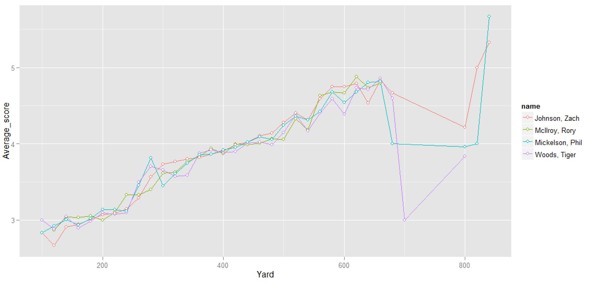

The key question in PGA is to predict the top 1, top 10 and cut in half in the next PGA tour. And what factor mostly effect a player's performance ?
According to our feature selection, yardage, the wind and par is the three main factors. However, wind scale is hard to measure and predict. Also, yardage accounts for more that 90% affection to the performance of players. So our core problem is model each player's performance on each yardage. That obviously, requires a lot of data. Thus, we collect all the data from 1984 to now to make a comprehensive measurement of each player's performance.
Tiger Woods's fall these years: The picture shown above is the comparison of Tiger Woods' average score got on each yardage (the less, the better) on different year. We can see that on each yardage, Tiger Woods play more shots these years, which means he performs worse.
Also, we can compare performance of different players, also make a simple linear regression line of them, see the picture below

However, the actual prediction process is a little bit more complicated than that. We use non-parametric regression in Python for faster processing and simulation. We simulated 10000 times of the next game and made ranking according to that.
Here we face another problem, considering the changing of player's states, how to choose the "right" data ?
To solve that problem, we use multi-dimensional time series to model the change of player's states. Also, according to our validation result, recent two years' data is most accurate for prediction.
If you are interested in golf, don't hesitate to load this website , pick two golfers, and see if one can beat another on each yardage ! The following picture is a glance at this webpage designed and coded by me.
Linear regression is probably the most used statistical tools in the world. Morever, step-wise linear regression is a more useful tools than multi-variable regression. Step-wise linear regression can be used to automatically eliminate uncorrelated variables. Moreover, step-wise regression can be used for feature selection in machine learning.
The problem is, for many people who have no knowledge of R or other programming language, how to do that ?
This website can easily solve your trouble. Because you only need to load in the data and click on "submit", the regression result will be shown on the page, like this:
However, there is still some restrictions, your data show be numeric, the first row should be the column names.